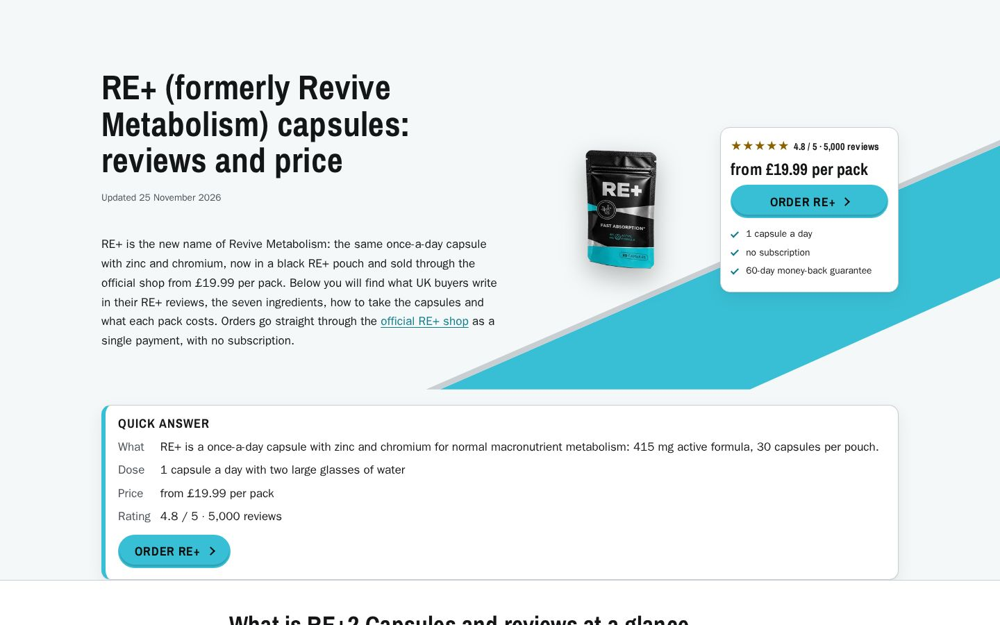
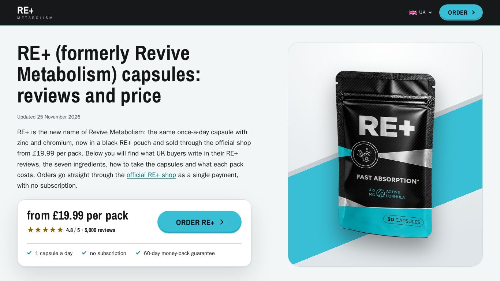
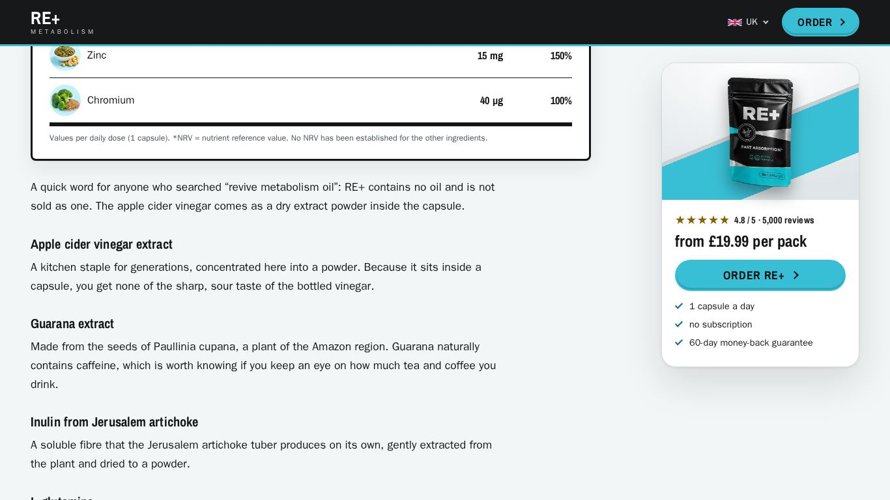
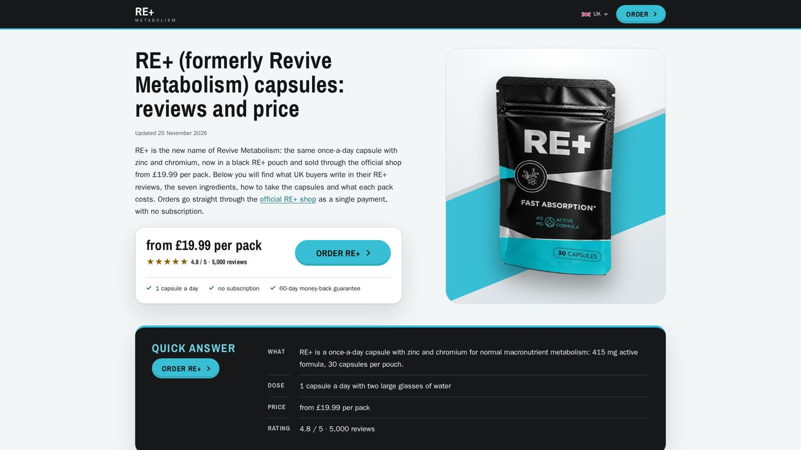
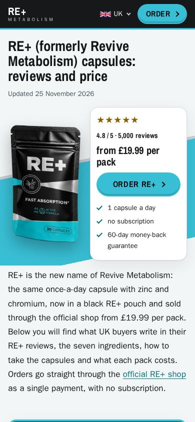

RE+ (revivemetabolism.eu) – new design for approval
Built by Fable 5.2 on the site engine → applies to all 26 pages. Same text, links, titles. Not live yet.
Before → after (desktop first screen)
BEFORE (live now)
AFTER
UK – desktop while scrolling (buy box follows)
UK – full page, desktopGermany – full page, desktopUK – wide screen
UK – phone first screen
UK – full page, phoneUK – dark mode
BEFORE – full page (live now)